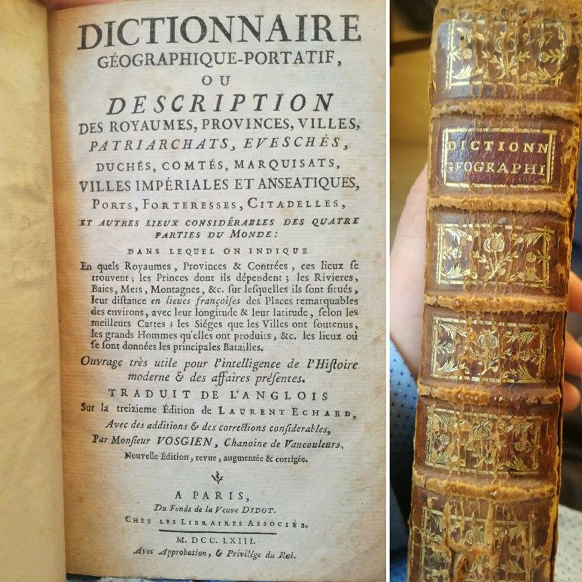

1957년 촘스키는 모든 언어 밑에 보편 문법이 있다고 주장했습니다. 규칙만 알면 — 무한한 문장을 만들 수 있다는 것. 랑그를 수학처럼 적자는 야심이었습니다.
초기 AI(1960~80)는 그 영향을 받아 전문가 시스템을 만들었습니다. 사람이 수만 개의 IF-THEN을 직접 써넣는 방식 — 의료(MYCIN), 컴퓨터 구성(XCON), 자연어(SHRDLU).
"I before E except after C" — 그런데 다음 페이지에 예외 50개. 한 회사의 번역 시스템은 4만 개 규칙을 짜 넣었지만, 신문 한 면도 못 옮겼습니다.